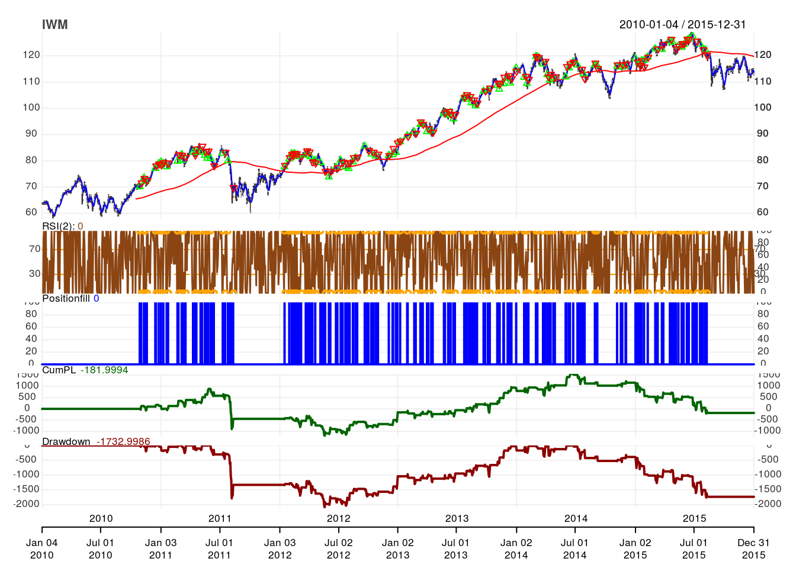
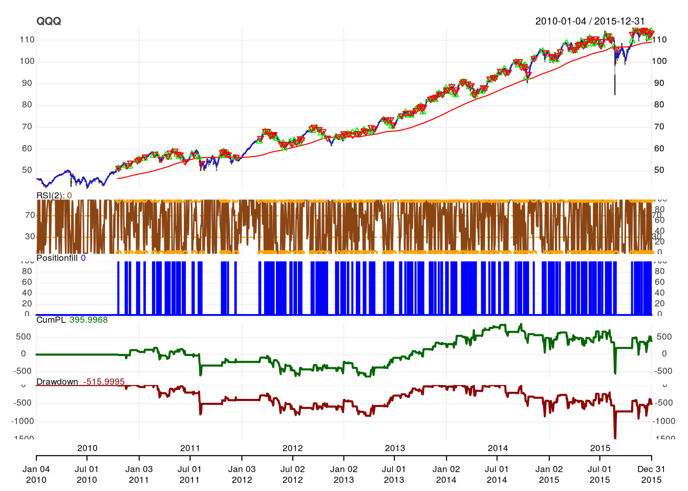
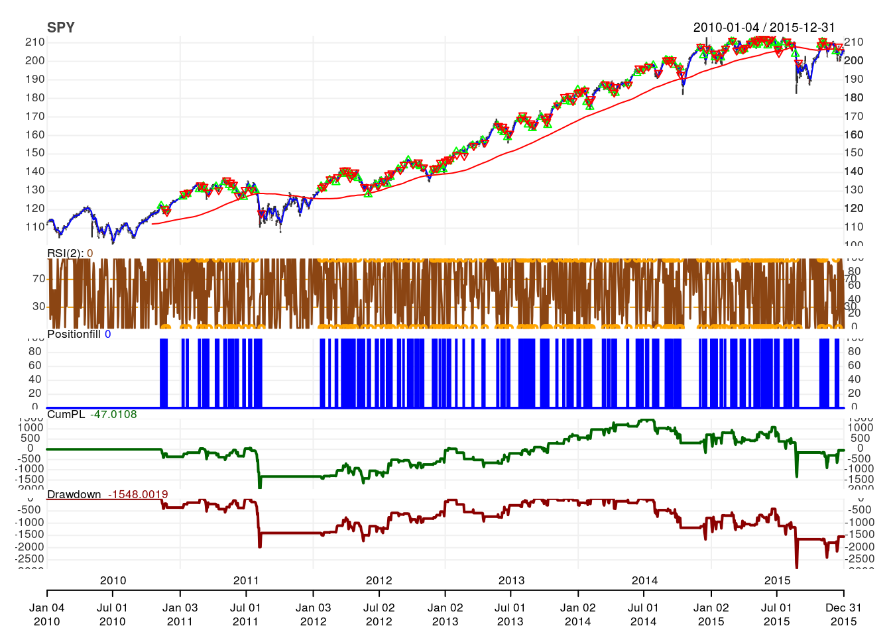
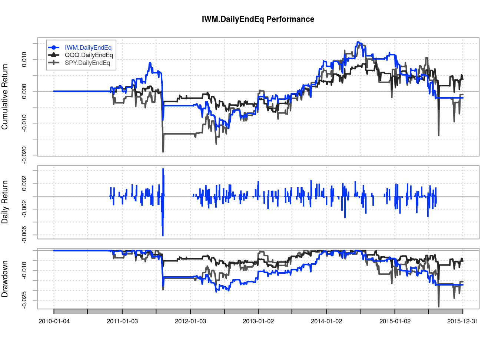
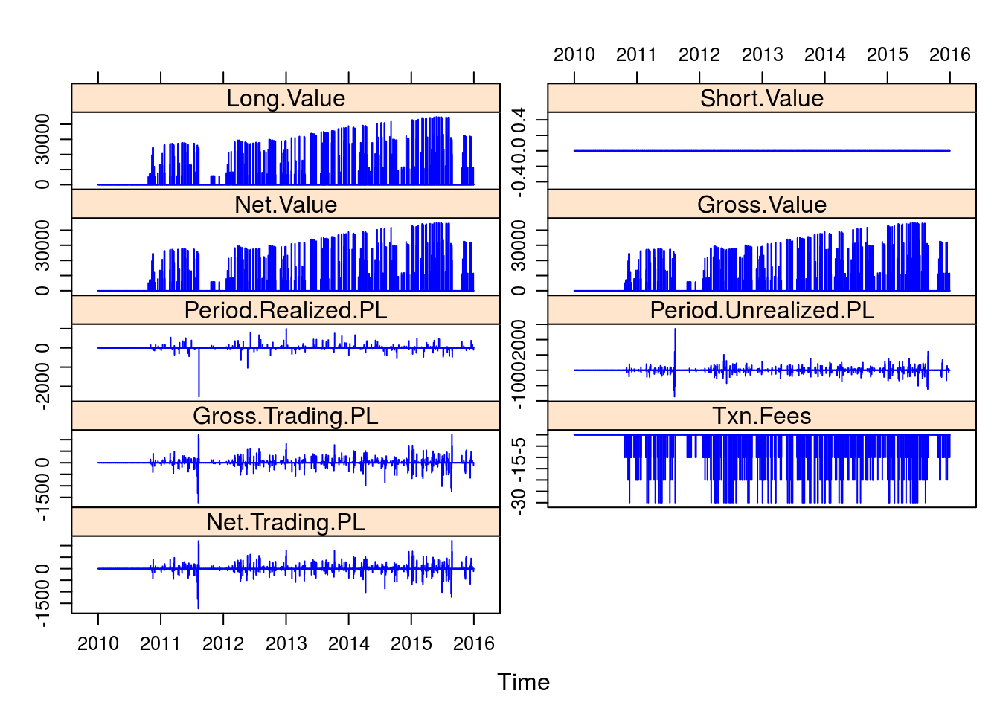

library(knitr)
library(lattice)
library(purrr) # For plotting multiple charts at once
library(quantmod)
library(quantstrat)source("./_R/functions.R") # for checkBlotterUpdate()symbols <- c("IWM", "QQQ", "SPY")
# Transaction Details
shares <- 100 #' Shares to trade
transaction_fees <- 10 #' Cost of trade, abs value
# Indicators
nrsi <- 2 #' RSI(2)
rsiThresh <- 5 #' RSI(2) threshold
rsiMaType <- "SMA" #' RSI uses SMA
smaFast <- 5 #' SMA(5)
smaFastCol <- 4 #' Blue
smaSlow <- 200 #' SMA(200)
smaSlowCol <- 2 #' Red
# Data params
source <- "yahoo" #' Yahoo, Google, FRED, etc.
init_date <- "2009-12-31" #' start_date - 1 day
start_date <- "2010-01-01" #' Begin trading
end_date <- "2015-12-31" #' End trading
init_equity <- 100000 #' Initial equity
# Portfolio, account and strategy names
portfolio.st <- "ConnorsRSI" #' Name of portfolio
account.st <- "ConnorsRSI" #' Name of account
strategy.st <- "ConnorsRSI" #' Name of strategy
# Additional
tz <- "UTC" #' Time zone
#' Currency abbr (ISO 4217); set for currency of symbols.
curr <- "USD"
adjustment <- TRUESys.setenv(TZ = tz)currency(curr)## [1] "USD"getSymbols(Symbols = symbols,
src = source,
from = start_date,
to = end_date,
# Adjust OHLC values for splits and dividencs, etc.
adjust = FALSE)## [1] "IWM" "QQQ" "SPY"stock(symbols,
currency = curr)## [1] "IWM" "QQQ" "SPY"# Remove existing objects to avoid invalid data
rm.strat(portfolio.st)
rm.strat(account.st)# Initialize portfolio object
initPortf(name = portfolio.st,
symbols = symbols,
initDate = init_date)## [1] "ConnorsRSI"# Initialize account object
initAcct(name = account.st,
portfolios = portfolio.st,
initDate = init_date,
initEq = 100000)## [1] "ConnorsRSI"# Set up portfolio
initOrders(portfolio = portfolio.st,
symbols = symbols,
initDate = init_date)strategy(strategy.st,
store = TRUE)# Add SMA(5) `SMA5`
add.indicator(strategy = strategy.st,
# TTR:SMA()
name = "SMA",
# Parameters for TTR:SMA()
arguments = list(x = quote(Cl(mktdata)),
n = smaFast),
# Var name for indicator
label = "SMA5")## [1] "ConnorsRSI"# Add SMA(200) `SMA200`
add.indicator(strategy = strategy.st,
name = "SMA",
arguments = list(x = quote(Cl(mktdata)),
n = smaSlow),
label = "SMA200")## [1] "ConnorsRSI"# Add RSI(2) `RSI2`
add.indicator(strategy = strategy.st,
name = "RSI",
# Notice our first parameter is price, not x like in SMA()
arguments = list(price = quote(Cl(mktdata)),
n = nrsi,
maType = rsiMaType),
label = "RSI2")## [1] "ConnorsRSI"# Apply indicators
ind <- applyIndicators(strategy = strategy.st,
mktdata = OHLC(mktdata))# Add signal when RSI2 < 5 `RSI2.lt.5`
add.signal(strategy = strategy.st,
name = "sigThreshold",
arguments = list(column = "RSI2",
threshold = rsiThresh,
relationship = "lt",
# Only when RSI x< 5
cross = TRUE),
label = "RSI2.lt.5")## [1] "ConnorsRSI"# Close > SMA(200) `Cl.gt.SMA200`
add.signal(strategy = strategy.st,
name = "sigComparison",
arguments = list(columns = c("Close",
"SMA200"),
relationship = "gt"),
label = "Cl.gt.SMA200")## [1] "ConnorsRSI"# Add signal for when RSI2.lt.5 and Cl.gt.SMA200 are TRUE `BTO`
add.signal(strategy = strategy.st,
name = "sigFormula",
arguments = list(formula = "RSI2.lt.5 & Cl.gt.SMA200",
cross = TRUE),
label = "BTO")## [1] "ConnorsRSI"# Close > SMA(5) `STC`
add.signal(strategy = strategy.st,
name = "sigComparison",
arguments = list(columns = c("Close",
"SMA5"),
relationship = "gt"),
label = "STC")## [1] "ConnorsRSI"sig <- applySignals(strategy = strategy.st,
mktdata = ind)# BTO `shares` shares at market price, preferably on Close.
add.rule(strategy = strategy.st,
name = "ruleSignal",
arguments = list(sigcol = "BTO",
sigval = TRUE,
orderqty = shares,
ordertype = "market",
orderside = "long",
prefer = "Close",
# Deduce transactions fees
TxnFees = abs(transaction_fees) * -1,
osFUN = osMaxPos,
# Do not replace any existing orders
replace = FALSE),
type = "enter",
# Var indicating order
label = "Long")## [1] "ConnorsRSI"# Liquidate when `STC` is TURE
add.rule(strategy.st,
name = "ruleSignal",
arguments = list(sigcol = "STC",
sigval = TRUE,
orderside = "long",
ordertype = "market",
orderqty = "all",
TxnFees = abs(transaction_fees) * -1,
# Replace existing orders
replace = TRUE),
type = "exit",
label = "Exit2SHORT")## [1] "ConnorsRSI"for(symbol in symbols){
addPosLimit(portfolio = portfolio.st,
symbol = symbol,
timestamp = init_date,
maxpos = shares)
}# Apply strategy
applyStrategy(strategy.st,
portfolios = portfolio.st)updatePortf(portfolio.st)## [1] "ConnorsRSI"updateAcct(account.st)## [1] "ConnorsRSI"updateEndEq(account.st)## [1] "ConnorsRSI"checkBlotterUpdate(portfolio.st,
account.st,
verbose = TRUE)## [1] TRUE# Print charts for each symbol showing transactions, PnL, Drawdown
# Assign to x to suppress R output
x <- map(symbols,
chart.Posn,
Portfolio = portfolio.st,
TA = paste(sprintf("add_SMA(n = %d, col = %d)",
smaFast,
smaFastCol),
sprintf("add_SMA(n = %d, col = %d)",
smaSlow,
smaSlowCol),
sprintf("add_RSI(n = %d, maType = %s)",
nrsi,
rsiMaType),
sep = ";"))
tstats <- tradeStats(portfolio.st)
kable(t(tstats))| IWM | QQQ | SPY | |
|---|---|---|---|
| Portfolio | ConnorsRSI | ConnorsRSI | ConnorsRSI |
| Symbol | IWM | QQQ | SPY |
| Num.Txns | 206 | 250 | 218 |
| Num.Trades | 103 | 125 | 109 |
| Net.Trading.PL | -181.9994 | 395.9968 | -47.0108 |
| Avg.Trade.PL | 8.233016 | 13.167974 | 9.568708 |
| Med.Trade.PL | 22.0000 | 6.9998 | 26.0001 |
| Largest.Winner | 379.9994 | 297.0000 | 465.0000 |
| Largest.Loser | -1028 | -280 | -1258 |
| Gross.Profits | 6451.000 | 6172.998 | 9551.992 |
| Gross.Losses | -5602.999 | -4527.001 | -8509.003 |
| Std.Dev.Trade.PL | 171.2831 | 109.7924 | 235.2390 |
| Percent.Positive | 57.28155 | 57.60000 | 56.88073 |
| Percent.Negative | 42.71845 | 42.40000 | 43.11927 |
| Profit.Factor | 1.151348 | 1.363595 | 1.122575 |
| Avg.Win.Trade | 109.33897 | 85.73608 | 154.06439 |
| Med.Win.Trade | 88.99980 | 76.00005 | 128.49945 |
| Avg.Losing.Trade | -127.34088 | -85.41511 | -181.04261 |
| Med.Losing.Trade | -86.5003 | -62.9999 | -127.9993 |
| Avg.Daily.PL | 8.233016 | 13.167974 | 9.568708 |
| Med.Daily.PL | 22.0000 | 6.9998 | 26.0001 |
| Std.Dev.Daily.PL | 171.2831 | 109.7924 | 235.2390 |
| Ann.Sharpe | 0.7630353 | 1.9039130 | 0.6457200 |
| Max.Drawdown | -2096.001 | -1463.999 | -2846.003 |
| Profit.To.Max.Draw | -0.08683172 | 0.27048984 | -0.01651819 |
| Avg.WinLoss.Ratio | 0.8586321 | 1.0037577 | 0.8509841 |
| Med.WinLoss.Ratio | 1.028896 | 1.206352 | 1.003907 |
| Max.Equity | 1550.9992 | 911.9963 | 1500.9911 |
| Min.Equity | -1209.0027 | -649.9989 | -1906.0011 |
| End.Equity | -181.9994 | 395.9968 | -47.0108 |
portfolio.pnl <- .blotter$portfolio.ConnorsRSI$summary$Net.Trading.PL
SharpeRatio.annualized(R = portfolio.pnl,
geometric = FALSE)## Net.Trading.PL
## Annualized Sharpe Ratio (Rf=0%) 0.0102395instrument.returns <- PortfReturns(portfolio.st)
SharpeRatio.annualized(R = instrument.returns,
geometric = FALSE)## IWM.DailyEndEq QQQ.DailyEndEq
## Annualized Sharpe Ratio (Rf=0%) -0.03442872 0.08447051
## SPY.DailyEndEq
## Annualized Sharpe Ratio (Rf=0%) -0.005695767returns <- PortfReturns(Account = account.st)
rownames(returns) <- NULL
charts.PerformanceSummary(returns,
colorset = bluefocus)
port <- getPortfolio(portfolio.st)
xyplot(x = port$summary,
type = "h",
col = 4)
R version 3.3.2 (2016-10-31)
**Platform:** x86_64-pc-linux-gnu (64-bit)
locale: LC_CTYPE=en_US.UTF-8, LC_NUMERIC=C, LC_TIME=en_US.UTF-8, LC_COLLATE=en_US.UTF-8, LC_MONETARY=en_US.UTF-8, LC_MESSAGES=en_US.UTF-8, LC_PAPER=en_US.UTF-8, LC_NAME=C, LC_ADDRESS=C, LC_TELEPHONE=C, LC_MEASUREMENT=en_US.UTF-8 and LC_IDENTIFICATION=C
attached base packages:
other attached packages:
loaded via a namespace (and not attached):